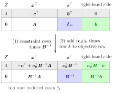

Let a linear program in standard form be written in equation form Ax=b,x≥0,maxZ=c⊤x, where A∈Rm×(m+n),c and x include the slack variables, and let B be a basis with basis matrix B and cost vector cB. The simplex tableau of B is the system
[10−c⊤+cB⊤B−1AB−1A][Zx]=[cB⊤B−1bB−1b],
written as a table with one column per variable Z,x1,…,xm+n, a right-hand-side column, the objective row on top and one row per constraint. It arises from the initial system Z−c⊤x=0,Ax=b by multiplying the constraint rows by B−1 and then adding (cB)k times row k to the objective row for k=1,…,m. The entry of the objective row in the column of xj,
cˉj=−cj+cB⊤B−1Aj,
is the reduced cost of xj, where Aj is the j-th column of A. Write akj′ for the entries of B−1A and bk′ for those of B−1b.
With the structural variables x and the slack variables s separated again, so that A is the original m×n matrix, the same tableau reads
The tableau of a basis is the original system of equations solved for the basic variables. Each basic variable occurs in exactly one constraint row, with coefficient 1, and not in the objective row, so the right-hand side shows the basic solution and its objective value at a glance. The matrix formula produces this tableau directly from the data A,b,c and B−1; the tableau version of the simplex method reaches the same table through a chain of Gauss-Jordan pivots.

Read the figure from top to bottom. The initial system Z−c⊤x=0,Ax+Ims=b becomes the tableau of B by the two steps of the Definition. Multiplying the constraint rows by B−1 turns the blue block Im into B−1 and the green b into the values B−1b of the basic variables; adding cB⊤ times the rows to the grey objective row produces the reduced costs and the objective value cB⊤B−1b. In Example 1 below the blue block is the B−1 under x3,x4,x5, and the right-hand side column holds 36 and 2,6,2.
Row k says xBk+j∈N∑akj′xj=bk′. Raising one nonbasic variable xj by one unit while the other nonbasic variables stay 0 therefore changes xBk by −akj′. The objective row says Z+j∈N∑cˉjxj=cB⊤B−1b, so the same unit change moves Z by −cˉj=cj−k∑(cB)kakj′: the direct gain cj minus what is lost because the basic variables adjust. A negative reduced cost marks a variable whose increase improves Z.
The slack block works because the slack columns of the equation form are Im, so multiplying by B−1 leaves B−1 itself there. This needs the slack columns to be unit vectors; other columns in that position show something else (Example 4 below).
OR Modelling writes the same objective row as z+j∑qjxj=z0, so qj=cˉj, but its reduced cost page calls −qj the reduced cost. Here the reduced cost is the tableau entry itself, nonnegative in an optimal tableau. A frequent slip is to read bk′ as the value of xk; it is the value of the k-th basic variable xBk.
1. A final tableau computed from B−1. For maxZ=3x1+5x2 subject to x1≤4,2x2≤12,3x1+2x2≤18,x≥0, with slacks x3,x4,x5, take the basis in the order (x3,x2,x1). Then cB=(0,5,3) and
B−1=1003121−31−31031,cB⊤B−1=(0,23,1).
The structural reduced costs are −3+(0,23,1)(1,0,3)⊤=0 and −5+(0,23,1)(0,2,2)⊤=0, and B−1b=(2,6,2) with Z=36. This is exactly the final tableau that the tableau Simplex method reaches from the slack basis (x3,x4,x5) in two pivots:
The columns of x3,x4,x5 hold B−1, and the objective row there holds cB⊤B−1.
2. Single entries without the whole tableau. For max6x1+3x2+5x3 subject to 2x1+3x2+x3≤6,x1+x2+2x3≤3,x1≤10,x≥0, with slacks x4,x5,x6, and the basis (x1,x2,x6), the inverse basis matrix is
B−1=−1113−2−3001.
Write the tableau in scalar form as xi=bˉi−j∈N∑aˉijxj for i∈B and Z=zˉ−j∈N∑cˉjxj. Each requested coefficient needs only one or two rows or columns of B−1:bˉ1=(−1,3,0)(6,3,10)⊤=3, the value of x1;aˉ23=(1,−2,0)(1,2,0)⊤=−3, so raising x3 by one unit raises x2 by 3; since x5 has column e2 and c5=0,cˉ5=cB⊤B−1e2=6⋅3+3⋅(−2)+0⋅(−3)=12. With x2=(1,−2,0)(6,3,10)⊤=0, the objective value is zˉ=6⋅3+3⋅0=18 (the value of x6 is not needed, as c6=0).
3. The order of the basic variables. Ordering the basis of Example 1 as (x1,x2,x3) instead permutes the columns of B and hence the rows of B−1,B−1A and B−1b: the constraint rows appear in the order x1,x2,x3, with right-hand sides 2,6,2. The basic solution, the objective row and cB⊤B−1=(0,23,1) do not change. The right-hand side in row k belongs to the k-th basic variable, not to xk; here they coincide only by the choice of order.
4. When a column is not a unit column. In the Big-M method, the constraint −x1≤−1 becomes x1−s2+w=1. For max3x1+2x2−Mw subject to x1+x2+s1=4 and this row, the unit columns are those of s1 and w, so these columns show B−1; the column of s2 is −e2 and shows −B−1e2. For the basis (s2,x1) one finds B−1=[11−10] under (s1,w) and (1,0)⊤ under s2.
Aliases: matrix form of the simplex tableau, simplex tableau of a basis, tableau in terms of B inverse
Keywords: -\boldsymbol{c}^{\top}+\boldsymbol{c}{\mathcal{B}}^{\top}\boldsymbol{B}^{-1}\boldsymbol{A}, \boldsymbol{c}}}^{\top}\boldsymbol{B}^{-1}\boldsymbol{b}, \boldsymbol{B}^{-1}\boldsymbol{A}, \bar{cj=-c_j+\boldsymbol{c}_j, reduced cost, objective row
Symbols: element of, real numbers, sum
}}^{\top}\boldsymbol{B}^{-1}\boldsymbol{A
Last updated: 10 November 2026 16:43
Simplex Tableau in Matrix FormAdding or Removing a VariableBig-M MethodChanging a Technology CoefficientDual Solution from the Simplex TableauNonoptimality and Reduced CostsObjective Coefficient RangingRevised Simplex AlgorithmRight-Hand-Side RangingBasis and Basis MatrixSimplex TableauGauss-Jordan EliminationBlock MatrixReduced CostSimplex PivotSimplex Optimality Test